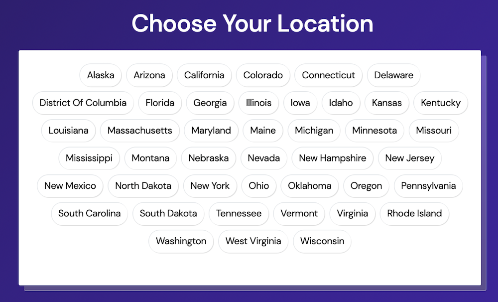
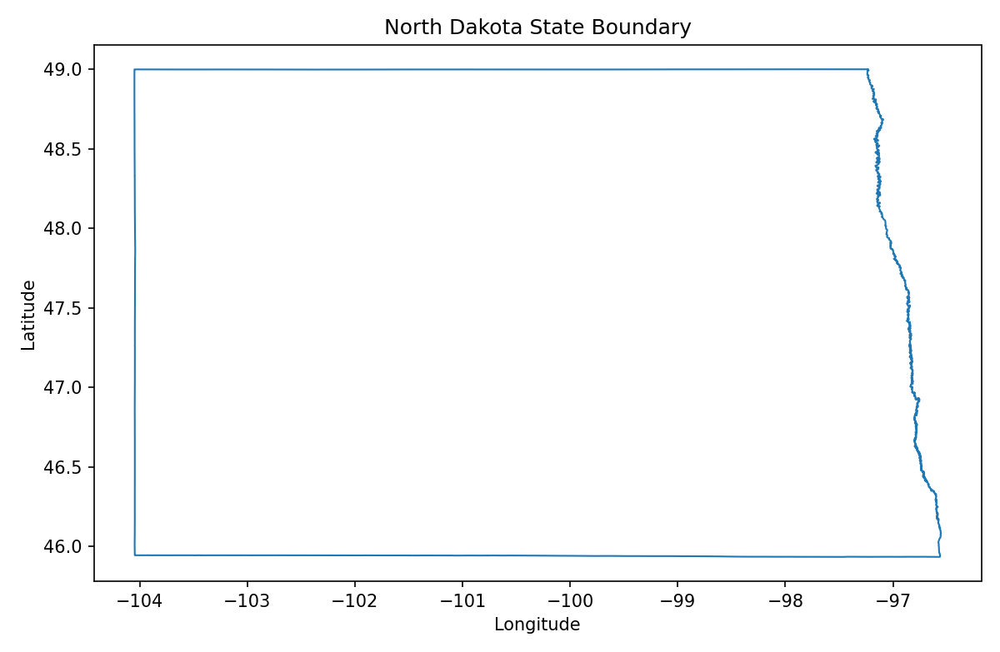
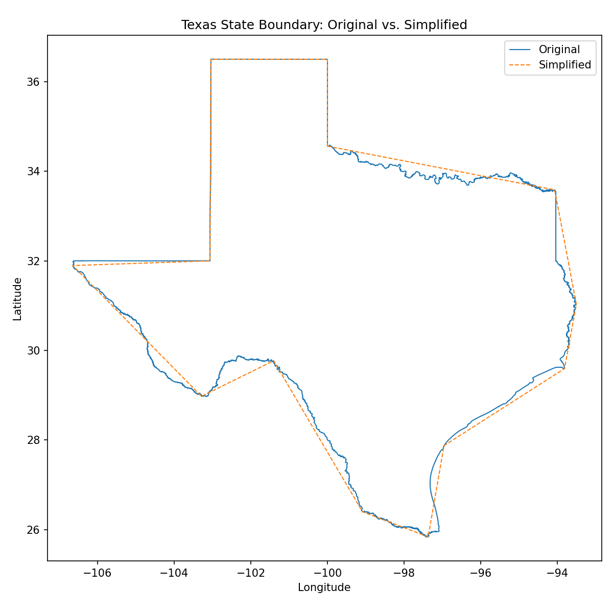
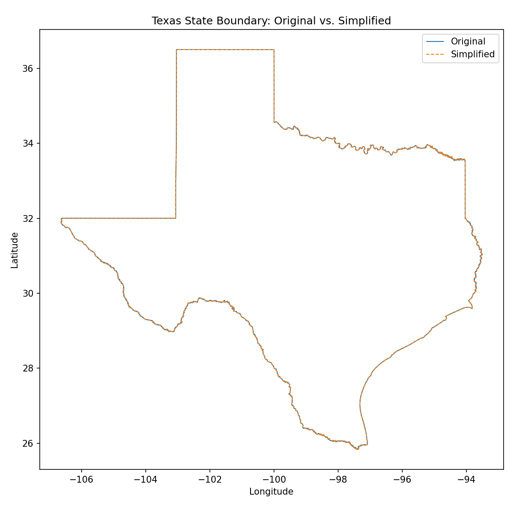
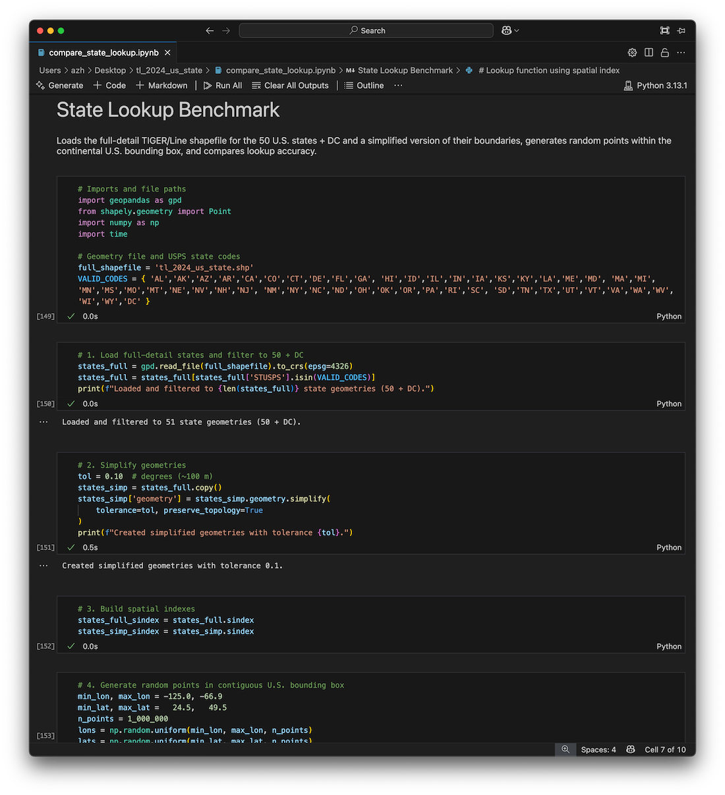

Associate Teaching Professor
Carnegie Mellon University
An app can easily check a user's location (with permission), but figuring out where that location is, is far more difficult. For example, a web app can use geolocation.getCurrentPosition() to get a user's location in the form of latitude and longitude coordinates. But how do you convert coordinates to country, state, or city? Well, you have to look it up, somehow. (I later learned this is called reverse geocoding.)
At the startup I worked at, we paid several thousands of dollars per year for the Google Maps API to do a reverse lookup (that decision was made long before I joined). Given the coordinates, it gave us back a full address. We only cared about the state they were in, so we ignored the rest. If the user didn't allow us to check their location, we simply showed a state selection screen:
We paid thousands of dollars a year, just for users to avoid this screen!? Yep.
Shortly after I joined the company, I tried to find a library that lets you lookup the state from coordinates, but I didn't find one. It seemed like the sort of thing that should exist. There are a lot of products that want to show you the nearest store. Some products use the user's IP address to determine the location. Or we could have done a simple distance check to a set of known points. Either would have been good enough.
Now that I don't have a need for such a library, I went down the rabbit hole and made coord2state based on actual US state borders for quick lookups. It is a single-file JavaScript library with no dependencies that can run client-side to determine which state a given latitude and longitude point falls in. It is 260 KB and is 99.9% accurate compared to the US Census Bureau's borderlines. You could have 100% accuracy if you were ok with 21 MB! It is on GitHub and NPM.
Try it:
State code: ?
The US Census Bureau publishes border data for use in GIS software. I downloaded the state borders from 2024, which came in a 50 MB binary file detailing the vectors of each border. Luckily there are several Python libraries that make these files easy to work with.
states = gpd.read_file("tl_2024_us_state.shp")
lon, lat = -74.0060, 40.7128 # New York
match = states[states.geometry.contains(Point(lon, lat))].iloc[0]["NAME"]
I could just wrap this up in my own web API and avoid the expensive Google Maps API. It would work well, but that is boring. My goal is to do it all client-side.
At a first glance, the borders are really detailed.
| State | Vertices |
|---|---|
| Texas | 62855 |
| Virginia | 49707 |
| Minnesota | 40293 |
| West Virginia | 35242 |
| Idaho | 35120 |
| Kentucky | 34623 |
| North Dakota | 32441 |
| North Carolina | 32133 |
| Georgia | 30758 |
| Arkansas | 29782 |
| Tennessee | 28874 |
| Montana | 26724 |
| Maryland | 26093 |
| Mississippi | 25719 |
| Iowa | 24200 |
| Louisiana | 21547 |
| Oklahoma | 21192 |
| Florida | 20603 |
| Missouri | 20283 |
| South Dakota | 19954 |
| Illinois | 19761 |
| Maine | 18932 |
| South Carolina | 17509 |
| Ohio | 17354 |
| New Hampshire | 16608 |
| Indiana | 16241 |
| Wisconsin | 16184 |
| Pennsylvania | 15994 |
| Alaska | 15329 |
| Oregon | 14581 |
| Nebraska | 13992 |
| Alabama | 13638 |
| Kansas | 13285 |
| Vermont | 12119 |
| California | 12103 |
| Arizona | 10816 |
| Michigan | 10705 |
| New York | 10276 |
| Nevada | 9537 |
| Wyoming | 8591 |
| Washington | 7945 |
| New Jersey | 7896 |
| Colorado | 7513 |
| Utah | 7490 |
| District of Columbia | 7365 |
| New Mexico | 7097 |
| Delaware | 5345 |
| Massachusetts | 4783 |
| Hawaii | 3519 |
| Connecticut | 3204 |
| Rhode Island | 2669 |
Thousands and thousands of vertices for a single state seems like way more precision than we need. For example, North Dakota has 32,441 vertices despite it being a rectangle with three straight sides and one jagged side that follows a river.
Surely we could simplify the borders a bit without losing much accuracy? The Shapely library already implements the Douglas-Peucker algorithm for simplifying lines. It removes points that don't change the overall shape within a specified tolerance.
With a tolerance of 0.5° (not an angle, but a linear distance measured in degrees of latitude/longitude), it reduces the number of vertices by 99.9% for most states. For example, Texas is reduced from 62,855 vertices to 14!
You can see that it oversimplifies by quite a bit though. It takes going down to 0.01° tolerance to make the differences indiscernible at this resolution, and yet it still reduces the vertices for most states by 99%. Texas is reduced by 98.8% to 756 vertices:
How much accuracy are we losing though? In terms of total area, it is a very small amount of error. Far less than 1%. I set up an experiment that compares the original geometry with the simplified geometry by testing 1,000,000 random points within the US.
A tolerance of 0.1° gives an accuracy of 99.3%!
Alright, that seems like it is probably accurate enough for most use cases. But none of this matters unless we can get the size down. I'd really like it to be less than 1 MB if this is going to run client side.
I need to convert the geometry data into an easier to use JSON format along with some JavaScript code that can look up which polygon a given point is in. Again, we can use an existing library to do all the hard work for us. Geopandas can load the geometry data and convert it to JSON. ChatGPT wrote a Python script that injects the JSON into this JavaScript template (it does find and replace on "geojson" with the JSON literal):
Ok, so now I have a working JS library that I could potentially ship. Next, I need to measure how much space it takes! A tolerance of 0.1° results in a 168 KB size JS file. We can minify it though. That brings it down to 55 KB.
That is definitely usable as a client-side library!!!
I wrapped it all up into a Jupyter notebook that compares accuracy and file size based on tolerance so that I could find the ideal size to go with. The results:
| Tolerance | Accuracy | Size | Minified |
|---|---|---|---|
| 0.000° (baseline) | 100.0000% | 72 MB | 21 MB |
| 0.001° | 99.9909% | 4.2 MB | 1.2 MB |
| 0.005° | 99.9505% | 1.5 MB | 439 KB |
| 0.010° | 99.9067% | 870 KB | 260 KB |
| 0.050° | 99.6473% | 257 KB | 81 KB |
| 0.100° | 99.3468% | 168 KB | 55 KB |
| 0.500° | 96.3959% | 96 KB | 34 KB |
| 1.000° | 92.3244% | 89 KB | 33 KB |
These results show that a small drop in accuracy gives a huge drop in file size. Based on this, a tolerance of 0.01° looks like a nice balance.
It is worth pointing out that my evaluation of accuracy is limited. The benchmark randomly chooses points within the bounding box of the continental US, but the population of the US does not follow a random distribution. The test could be expanded to generate points based on a population density map.
Also, testing points that are obviously in the center of a state is not interesting. It is near borders that we actually care about. The overall results will hide areas with high error rates, such as islands or narrow borders. The next step would be to identify these areas and build a test set for them.
I casually scanned the 10 most populous cities to see if they were being impacted by the simplfied borders. At 0.1°, there are some issues, such as a sliver of Staten Island being considered New Jersey. 😬 Don't come after me, please. At 0.01°, the problem goes away.
It could improve results to use a different precision for states based on their population or density.
A side effect of the geometry simplication is that there are some very small gaps between states. Based on your use case, you'll need to handle the case of the point not being within any state borders. In these rare cases, you could fall back to a different method, such as distance checking centroid points or adding an episilon to all state borders. (The user may also be in another country or in the ocean...)
It is also possible to apply my exact approach to any other borders, such as the city borders provided by the US Census Bureau. However, this is going to require significant memory, so you wouldn't want to ship it as a client-side JS library. You'll want a more efficient data structure for doing the lookup too (e.g., binary space partioning).
For most casual use cases, the library will be fine as is. I packaged it with a tolerance of 0.01° which I believe gives plenty of accuracy and minifies to 260 KB. You can find it on GitHub and NPM.
npm install coord2state